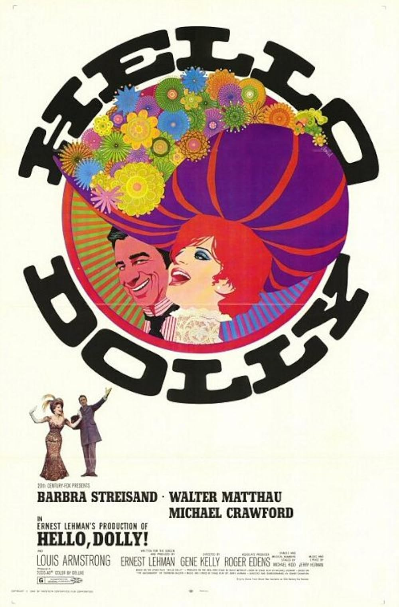

Hello, Dolly!
42nd Academy Awards
(Oscars 1970)
7 Nominations, 3 Awards
| Nominations | ||
|---|---|---|
| Category | Nominees | Result |
| Best Picture | Ernest Lehman | Nominated |
| Cinematography | Harry Stradling | Nominated |
| Film Editing | William Reynolds | Nominated |
| Art Direction | George Hopkins, Herman Blumenthal, Jack Martin Smith, John DeCuir, Raphael Bretton, and Walter M. Scott | Won |
| Costume Design | Irene Sharaff | Nominated |
| Sound | Jack Solomon and Murray Spivack | Won |
| Music (Score of a Musical Picture--original or adaptation) | Lennie Hayton and Lionel Newman | Won |